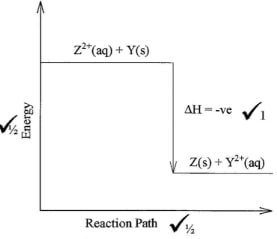
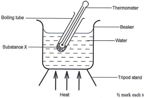

2+(aq) * CO32 (aq) —› BaCO3(S)
(c) Give one use of gas N.(1 mark)
- Making soft drinks/aerated drinks;
- In refrigeration;
- In extinguishing fires;
- Making baking powder; Manufacture of sodium carbonate; Cloud seeding.
9.An experiment was carried out to determine the presence of substancePQR and S in mixture T.the results obtained are as follows
(a) Name the method of sepration illustrated in figure 2
Chromatography/paper chromatography
(ii)A substance which is least soluble in the solvent used.
Q
10. Using iron filings, describe an experiment that can be conducted to show that oxygen is present in air. (3 marks)
Wet a measuring cylinder/gas jar and sprinkle some iron filings on
the wet surface. Remove the excess iron filings;
Invert the measuring cylinder in a trough of water;
- Take the reading of the air column in the measuring cylinder. Leave the set-up for 2 days;
Read and record the volume of the air column;
11. (a) Element U has atomic number 12 while element V has atomic number 16. How do the melting points of their oxides compare? Explain. (3 marks)
The oxide of U has higher melting point than the oxide of V;
This is because the oxide of U is a solid with ionic bonds hence requires a lot of energy to melt;
The oxide of V is a gas hence requires little energy to melt/break molecular forces of attraction.
12. When ethene gas is compressed at a high temperature, a solid is formed.
(a) Give the name of the solid. (I mark)
Polythene / Polyethene
(b) Explain why it is not advisable to allow the solid to accumulate in the environment.
(2 marks)
It is non-biodegradable, hence pollutes the environment.
13. In the Haber process, nitrogen reacts with hydrogen according to the following equation.
3H2(g) + N2(g) 2NH3(g) ; AH = —92 kJ mol**
(a) What would be the effect of adding a catalyst on the position of the equilibrium?
(1 mark)
No effect/does not affect the position of the equilibrium.
(b) Explain why it is not advisable to use temperatures higher than 773 K in the Haber process. (2 marks)
Forward reaction is exothermic, excessive temperatures would favour the backward reaction therefore lowering the yield of ammonia.
14. Figure 3 shows a set-up used by a student to prepare dry chlorine gas in the laboratory.
Identify three mistakes in the set-up, and give a reason for each. (3 marks)
- One reagent is missing, hence reagents provided cannot produce
chlorine;
- Wrong drying agent — Calcium oxide will react with the chlorine gas;
- Incorrect method of gas collection - No gas will be collected / chlorine is denser than air.
15. You are provided with solid potassium hydrogen carbonate. Describe how a solid sample of
potassium nitrate can be prepared. (3 marks)
Measure a certain volume of dilute nitric(V) acid and place it in a
beaker;
Add potassium hydrogen carbonate little by little as the mixture is
stirred until effervescence stops;
Evaporate the solution to saturation and allow to cool for crystals to
form;
Dry the crystals in between filter papers.
16. Metal X and Y have standard electrode potentials of —0.13 V and —0.76V respectively, T metals were connected to fonn a cell as shown in Figure 4.

(a) Name the part labelled Z.
Salt bridge
(b) State one function of the part labelled Z.
- Provides electrical contact between the electrodes//completes the circuit;
(c) Calculate the e.m.f. of the cell.
(1 mark)
—0.13 - 0.76
=+0.63K
17. Figure 5 represents a grid that is part of the periodic table. Study it and answer the questions that follow. The letters are not the actual symbols of the elements.
- Provides cations and anions to replace those used up.
(a) Write the electron arrangement of element C. (1 mark)
2.8.4
(b) On the grid provided, show with a tick (I) the position of element D whose atomic number is 18. (1 mark)
period 3, group 8
(c) Element E is more reactive than A. Explain.
E has a bigger atomic radius than A / the valence electrons of element E are further from the nucleus, hence loosely held by the positive nucleus and requires less energy to be removed during reaction.
OR
A has a smaller atomic radius than E / the valence electrons of element A are closer to the nucleus, hence strongly held by the positive nucleus and requires more energy to be removed during a reaction.
18. (a) Define molar heat of displacement.
(1 mark)
Molar heat of displacement is the enthalpy change that occurs when one
mole of a substance is displaced from its ions in solution.
(b) The following ionic equation represents the reaction between metal Y and an aqueot
solution of Z°+.
Draw an energy level diagram to represent the reaction.

19. (a) Give the symbols of the two charged particles emitted by a radioactive isotope.(2 marks)
∝ - positively charged / 2He
β- negatively charged / Je
21082Pb -> abX + 2º
(b) An isotope 2 0 Pb disintegrates by emitting two beta particles. Determine the mass number
and atomic number of the resulting nuclide.
a = 210 + 0 = 210
b = 82 + 2 = 84
mass no = 210 Atomic number = 84
20. (a) Zinc reacts with hydrochloric acid according to the following equation. Zn(s) + 2HCl (aq) ZnCl2(aq) + H2(g)
Identify the reducing agent. Give a reason for the answer. (2 marks)
- Reducing agent — Zn
- The oxidation number of Zn increased from 0 to +2 OR
Zn loses electrons form zinc ions/ Zn is oxidized to Zn2+
(b) Iron sheets are dipped in molten zinc to prevent rusting. Name this process. (l mark)
Galvanization
21. Study the set-up in Figure 6 and answer the questions that follow.
(a) Name the substance that was collected in tube P. (1 mark)
Water
(b) Write an equation for the reaction which occurs in tube Q in the first few minutes of the experiment. (1 mark)
CO2(g) + Ca(OH)2(aq) → CaCO3(s) + H20(l)
(c) Give a suitable conclusion for the experiment in the set-up. (1 mark)
Burning candle /organic matter produces water and carbon(V) oxide. OR
Candle contains carbon and hydrogen / candle is a hydrocarbon
22. You are provided with the following: thermometer, boiling tube, beaker, Bunsen burner, pure substance X whose boiling point is about 80°C, water and any other apparatus that may be required.
Draw a labelled diagram of the set-up that can be used to determine the melting point ofX. (3 marks)

23. Explain why it is important to put off a non-luminous flame immediately after use. (2 marks)
A non -luminous flame is invisible, hence it should be put off to avoid
being accidentally burned.
24. (a) Name two ores of iron. (1 mark)
- Haematite;
- Magnetite;
- Siderite.
(b) Describe how the amount of iron in a sample of iron(III) oxide can be determined.
(2 marks)
- Weigh the Iron(III) oxide together with a crucible;
- Heat the Iron(III) oxide and coke to a constant mass;
- Cool and re-weigh residue and crucible
- The difference in mass is weight of the iron.
25. Explain why a solution of sodium chloride conducts electricity while that of sugar does not.
(2 marks)
A solution of sodium chloride contains ions which are free to conduct
electricity while that of sugar contains molecules hence cannot conduct electricity.
26. Explain why commercial indicators are preferred to flower extracts as aCid-base indicators.(2 marks)
The composition of commercial indicators remains constant. hence
gives consistent results.
The composition of flower extracts change with time giving inconsistent results.
27. (NH, )2HPO4 is a fertiliser used by farmers to boost their crop production.
(a)
(N = 14.0; H — 1.0; P = 31.0; O = 16.0) (2 marks)
R.F.M of (NH4)2HPO4 => (14 x 2 + (9 x 1) + 31 + (16 x 4))
= 28 + 9 + 31 + 64
= 132
31g of P → 132
20000g → ?
20,000
132
x 31 = 4697g = 4.697kg
(b) State one advantage of this fertilizer, (NH4)2HPO4, over urea (CO(NH 2)2)- (1 mark)
has two nutrients available to crops, nitrogen and phosphorus, urea has only nitrogen.
28.Distinguish between emprical and molecular formular of a compond
Empirical formula shows the Simplest whole number ratio of the moles
of atoms of different elements in a compound while the molecular formula shows the actual number of atoms of various elements present in one molecule of the compound.